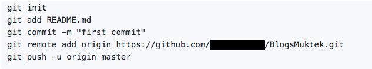
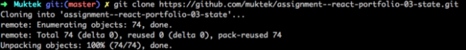
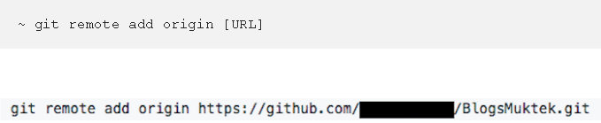
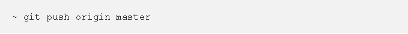

GITHUB¿Que es GITHUB?
Github es un sitio web en la nube que nos permite a los desarrolladores de codigo almacenar y administrar el codigo, tambien cuenta
con un registro y control de los cambios realizado a nuestro codigo a medida de que crece el proyecto, github es una compañia la cual ofrece
hosteo de repositorios almacenados en una nube.
Estos son algunos comandos generales de GITHUB:    |